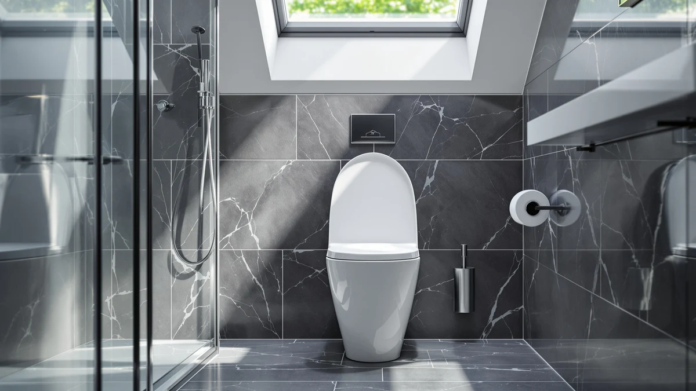

Things to Know Before You Buy
- Elongated bowls add about two inches of length, which most adults find more comfortable but which crowds bathrooms under 30 square feet.
- Round bowls cost less and save space, so they remain the standard pick for powder rooms, kids' bathrooms, and tight corners.
- Seat shape is not interchangeable. An elongated seat will not fit a round bowl, so confirm your bowl shape before buying a replacement.
- Both shapes use the same standard 12-inch rough-in, so swapping one for the other usually means new bolt holes and a possible flange adjustment.
- Resale value leans elongated, since most new US construction and remodels now default to the longer bowl.
The elongated vs round toilet question comes up every time you shop for a new bowl or a replacement seat, and the answer changes with your bathroom rather than your taste. Elongated bowls measure roughly 18.5 inches from the mounting bolts to the front edge, while round bowls stop closer to 16.5 inches. That two-inch gap decides whether a fixture feels roomy or whether it leaves enough clearance to swing the door open.
You are usually weighing two practical trade-offs: comfort and resale appeal on one side, floor space and price on the other. We compared both shapes the way a plumber and a homeowner would, looking at how each fits a standard rough-in, how seats and lids match up, and what you pay over the life of the fixture. Each shape wins in a different kind of room, so the job is to match the bowl to your space instead of guessing.
Quick Answer
For most full bathrooms, an elongated toilet wins on comfort and resale, which is why it dominates new US construction. A round toilet is the smarter choice when floor space is tight, when the room is a powder room or kids' bath, or when you want to spend less. Neither shape wins in every case, so pick elongated for comfort and round for compact rooms.
What is Elongated?
An elongated toilet uses an oval bowl that extends roughly 18 to 18.5 inches from the wall to the front rim. It is the larger of the two shapes, and it has become the default in American homes built or remodeled over the last two decades. The extra length gives you a wider seated area, which taller adults and larger users tend to prefer for daily comfort. Kohler, TOTO, and American Standard sell most of their residential lines in elongated form, so you also get the widest selection of styles, heights, and flushing systems.
The trade-off is footprint. An elongated bowl pushes about two inches further into the room, which matters when a door swing, vanity, or side wall sits close to the toilet. You also pay a little more for the seat. An elongated padded or slow-close seat, like the Mayfair models we recommend below, usually runs a few dollars above its round equivalent because the part uses more material. If your bathroom has the clearance, the comfort gain justifies both the cost and the space for most households.
What is Round Toilet?
A round toilet uses a circular bowl that stops around 16.5 inches from the wall, roughly two inches shorter than its elongated counterpart. In a small space, the round bowl is the one that buys back floor area. That shorter projection is why builders still spec round toilets in powder rooms, half baths, closets converted to bathrooms, and any layout where the fixture sits near a door or a tub.
Round bowls also cost less, both for the toilet itself and for the seat. Replacement seats for round bowls run a few dollars cheaper, and the smaller bowl holds slightly less water on older models. The downside is comfort, since the seated area is more compact and taller adults notice it over time. Style selection is narrower too, because most premium and smart-toilet lines launch in elongated first. For a guest bathroom that sees light use, or a child's bathroom where the smaller seat actually fits better, a round toilet does the job without wasting space or money. Confirm the bowl shape before ordering a seat, because round and elongated seats are not interchangeable.
Head-to-Head: Build Quality & Durability
Build quality rarely comes down to the bowl shape, because both use the same vitreous china and the same glazing process from a given manufacturer. A Kohler round bowl and a Kohler elongated bowl in the same model line share the same trapway, the same flush valve, and the same warranty. Durability differences show up in the seat, not the porcelain.
Seats are where shape affects longevity. An elongated seat spans a longer hinge-to-front distance, so a cheap plastic version flexes more at the front edge and can crack sooner under repeated weight. The padded Mayfair seats and the Bemis slow-close models hold up well on elongated bowls because they use reinforced cores and metal-reinforced hinges instead of thin polypropylene. Round seats, being shorter, resist flex naturally, so even budget round seats tend to last.
Slow-close hinges matter for both shapes, since a slamming lid is the most common cause of hairline cracks over years of use. If you want the longest service life, buy a seat with a molded wood or thermoset core and stainless hinges, whether your bowl is round or elongated.
Head-to-Head: Price & Value
Price is one of the clearest splits between the two shapes. A complete round toilet typically costs $20 to $50 less than the same model in elongated form, and round replacement seats follow the same pattern. The Mayfair padded seat sits around $32 in its common elongated size, while round versions of comparable seats often land a few dollars lower. Over the life of the fixture, that gap stays small.
Value depends on the room. In a powder room you rarely sit in, the round toilet's lower price is the better deal, since you are not paying for comfort you will not use. In a primary bathroom, the elongated bowl's resale appeal and daily comfort justify the premium. Either way, spend the saved money on a quality slow-close seat, because a $25 Bemis seat outlasts and outperforms the bargain seat shipped with most bowls.
Head-to-Head: Use Experience
Day to day, the difference between the two is something you feel rather than measure. The elongated bowl gives most adults a more comfortable, fully supported seated position, which is why it reads as the more premium option in hotels and newer homes. Taller users and anyone who spends a few extra minutes with a phone notice the difference right away. Cleaning is marginally easier on an elongated bowl too, since the open front gives you more room to reach the rim.
A round toilet feels tighter, but that compactness becomes an advantage in the right room. In a narrow half bath, the shorter bowl leaves clearance to walk past or open the door without brushing the seat. For small children, the smaller opening can feel more secure. The seat experience tracks the bowl: padded seats like the Mayfair add cushioning on either shape, and a slow-close lid removes the nighttime slam on both. If comfort over long sits is your priority, elongated wins. If easy movement in a small room matters more, the round toilet earns its place.
When to Choose Elongated
Choose an elongated toilet when you have the floor space and comfort is the priority. It is the right call for primary bathrooms, full guest baths, and any room larger than about 30 square feet with at least 24 inches of clearance in front of the bowl. Taller adults, larger users, and households planning to resell should lean elongated, since US buyers now expect the longer bowl and inspectors note it as a modern standard.
It is also the better choice if you want the widest selection of seats and smart features. Slow-close padded seats, heated seats, and bidet attachments all launch in elongated sizing first. If you are remodeling and replacing the bowl anyway, the small added cost of going elongated pays back in daily comfort and in the impression the bathroom leaves on guests and future buyers.
When to Choose Round Toilet
Choose a round toilet when space or budget drives the decision. The round bowl is the practical winner for powder rooms, half baths, basement bathrooms, and any layout where two inches of projection would block a door or crowd a vanity. If your bathroom is under about 30 square feet, measure before you commit to elongated, because the shorter bowl often makes the room usable.
A round toilet also makes sense for children's bathrooms, where the smaller seat fits little users better, and for rental units or secondary bathrooms where you want to hold down cost. You give up some seated comfort and a bit of style selection, but you gain floor space and save money on both the bowl and the seat. Pair it with an inexpensive slow-close round seat, and the room works well for light, occasional use.
Our Top Picks
Whichever bowl shape you land on, the seat is the part you touch every day, and it is the cheapest upgrade in the bathroom. These three picks cover the most common needs: a cushioned everyday seat, a budget-friendly padded option, and a premium quick-release model. Confirm whether your bowl is elongated or round before ordering, since the two are not interchangeable.

Editor’s Pick
Mayfair Padded Toilet Seat Cushioned
The padded cushion and slow-close hinges make this the most comfortable everyday seat we recommend, and it fits the elongated bowls most US homes already have.
$32.15
Check Price on Amazon
Best Value
Mayfair Padded Toilet Seat with
Nearly the same cushioned comfort as our top pick at a lower price, with sturdy hinges that survive daily slamming.
$34.12
Check Price on Amazon
Premium Choice
Quick Flip Toilet Seat with
The quick-release hinge pops off for deep cleaning in seconds, which is worth the premium if grime around the hinges bothers you.
$54.99
Check Price on AmazonFrequently Asked Questions
Is an elongated or round toilet better?
Neither is better in every case. An elongated toilet is more comfortable and is the standard in most US homes, while a round toilet saves space and money in small bathrooms. Match the bowl shape to your room size rather than picking one as a universal winner.
Can I put an elongated seat on a round toilet?
No. Elongated seats are about two inches longer and will overhang a round bowl, leaving a gap at the front and loose mounting. Buy a seat that matches your bowl shape, and measure first if you are unsure.
How do I tell if my toilet is elongated or round?
Measure from the center of the two seat mounting bolts to the front edge of the bowl. Around 16.5 inches means round, and around 18 to 18.5 inches means elongated. That measurement also tells you which replacement seat to order.
Does an elongated toilet use more water?
No. Water use depends on the flush system and the model's gallons-per-flush rating, not the bowl shape. A modern 1.28 GPF elongated toilet uses the same water as the round version of the same model.
Which shape is better for a small bathroom?
A round toilet. Its shorter bowl projects about two inches less into the room, which preserves clearance for doors, vanities, and walking space in bathrooms under roughly 30 square feet.
Final Verdict
The elongated vs round toilet choice comes down to your room, not a universal winner: pick an elongated bowl for comfort and resale in a full bathroom, and a round bowl to save space and money in a powder room or kids' bath. Once you know your shape, put the savings toward a good seat. For most buyers that means the Mayfair Padded Toilet Seat, which adds cushioned comfort and slow-close hinges to either bowl for around $32.